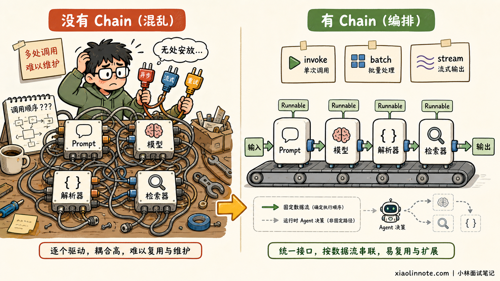
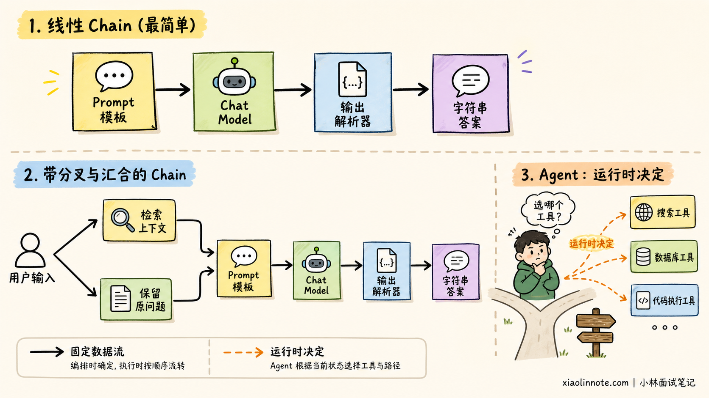
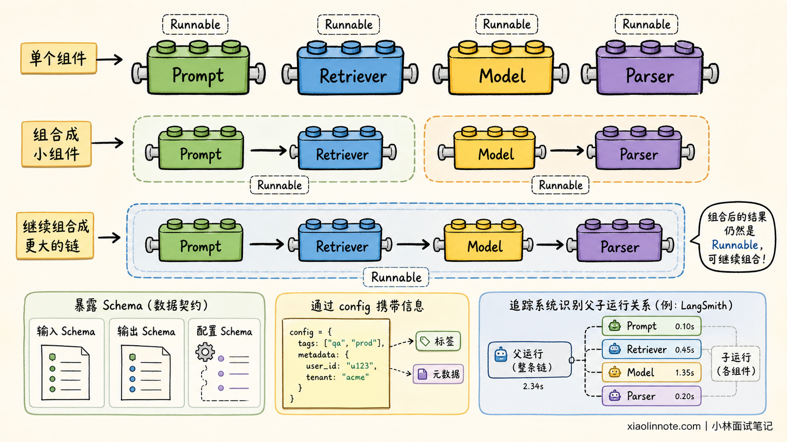
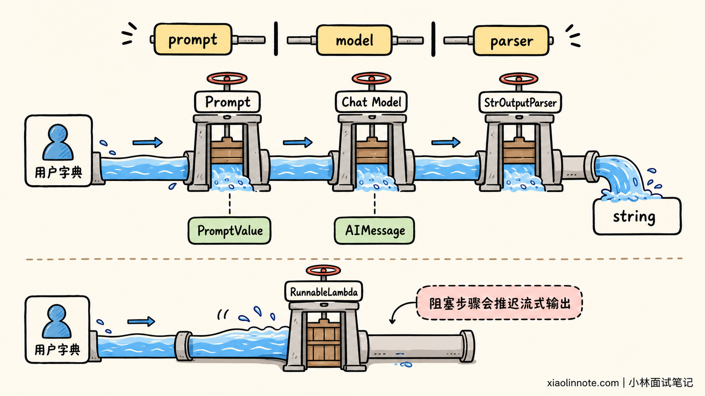
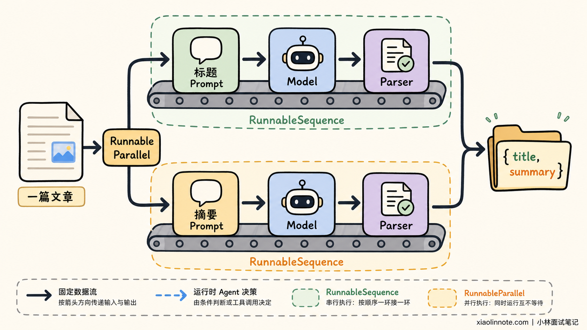
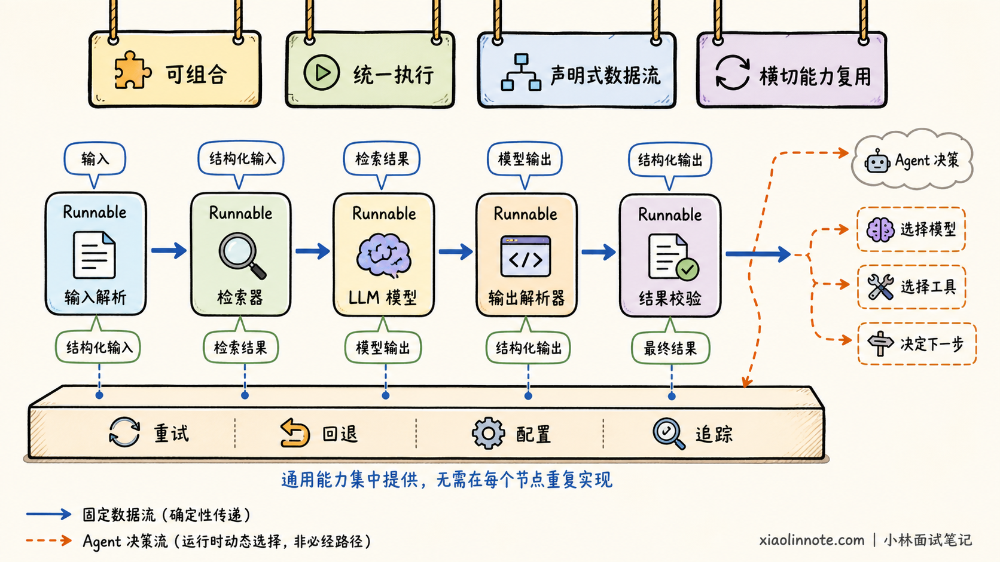
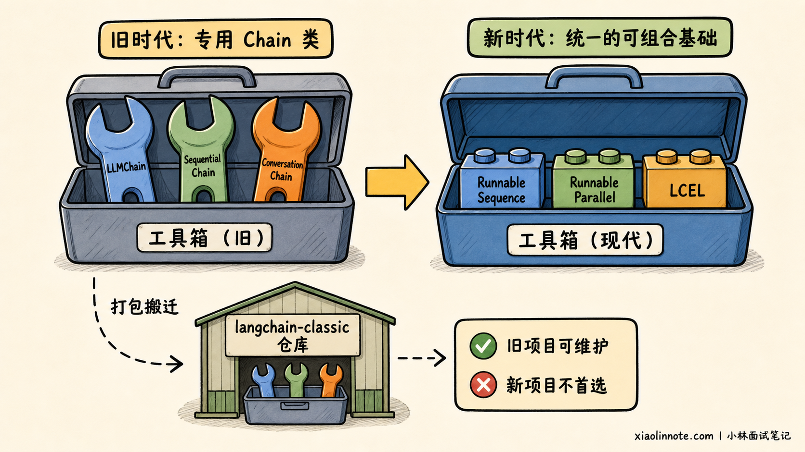

请你谈谈对 LangChain 中核心概念「Chain」的理解，以及它的核心作用与设计理念。
👔面试官：你怎么理解 LangChain 里的 Chain？
🙋♂️我：Chain 就是把 Prompt 和大模型连起来，先拼提示词，再让模型回答。
👔面试官：这只能算最简单的一条链。检索器、输出解析器、自定义函数能不能进 Chain？一个步骤的输出又怎么交给下一个步骤？
🙋♂️我：那就都塞进 LLMChain，复杂一点再套一个 SequentialChain，LangChain 主要就是靠这些 Chain 类来编排。
👔面试官：你这个答案停在旧版本了。LangChain v1 已经把这些旧式 Chain 移到 langchain-classic，新代码还应该这么写吗？
🙋♂️我：应该改用 LCEL，用 | 把步骤连起来。不过 | 可能只是让代码短一点，本质上还是按顺序调几个函数吧。
👔面试官：又漏了一层。LCEL 组合出来的是 Runnable，整条链会获得统一的同步、异步、批处理、流式调用和配置能力。那 Chain、Runnable、LCEL 三者到底是什么关系？
这道题真正考的不是会不会写一个 |，而是能不能讲清楚 LangChain 为什么要把一堆零散组件变成一条可组合、可执行、可观测的数据流水线。
💡 简要回答
我理解的 Chain，不是某一个固定的类，而是一种应用编排思路：把 Prompt、模型、检索器、输出解析器和自定义逻辑等步骤，按照明确的数据流连接起来，让上一步的输出成为下一步的输入，最终形成一个可以整体执行的流程。
在现在的 LangChain 里，Chain 最重要的技术基础是 Runnable。每个步骤都尽量遵守统一的输入输出和执行接口，再通过 LCEL 的 | 做串行组合，或者通过字典、RunnableParallel 做并行组合。
组合后的整条 Chain 本身仍然是 Runnable，所以可以继续嵌套，也能统一使用 invoke、ainvoke、batch 和 stream 等能力。
它的核心设计理念是「组合优于堆积封装」。开发者只关注每一步做什么、数据怎么流动，框架负责把执行方式、配置、重试、回退和追踪等通用能力接到整条流程上。
需要注意版本边界。LLMChain、SequentialChain 属于旧式 Chain API，LangChain v1 已把这类能力移入 langchain-classic，适合维护旧项目，不应再作为新项目的首选写法。
确定性的线性或分支流程可以用 Runnable 和 LCEL，Agent 让模型在运行时动态决定下一步；带循环、持久状态和人工审批的复杂工作流，则更适合用 LangGraph。
📝 详细解析
为什么需要 Chain？
假设我们要做一个最简单的商品评价分类功能。完整过程不是只调用一次模型，而是要先清洗用户输入，再把变量填进 Prompt，调用模型，最后把模型返回的消息解析成业务需要的字符串。
如果全部手写，代码里很快就会出现一堆胶水逻辑：这个函数返回字符串，下一个函数却要消息对象；同步调用写一套，异步调用再写一套；想加流式输出、批处理、重试和链路追踪，又得分别改造每一步。
步骤只有三个时还能忍，等流程变成「问题改写 -> 检索 -> 文档整理 -> Prompt -> 模型 -> 结构化解析」，维护起来就像拿很多根散落的电线临时接出一台机器。每加一个零件，都要重新确认接口能不能接上。
Chain 解决的就是这个问题。它先让每个零件暴露相对统一的插口，再把它们按照数据流接成一台完整机器。调用方不用逐个驱动内部步骤，只需要给整条链输入，再从整条链拿输出。

所以，从业务视角看，Chain 是「把多个处理步骤串成一个完整任务」；从软件设计视角看，它是在做数据流编排和组件组合。
Chain 只能线性执行吗？
很多林友看到 Chain 这个单词，会自然地把它理解成从左到右的一根直线。这个直觉只对了一半。
最简单的 Chain 确实是线性的，例如：

用户输入 -> Prompt 模板 -> Chat Model -> 输出解析器 -> 字符串答案
但真实应用还可能出现并行分支。比如用户问题一边送去知识库检索，一边原样保留下来，等检索结束后再把「问题」和「上下文」汇合到 Prompt。它也可能根据分类结果走不同分支。
因此，更准确的理解是：Chain 描述了一张事先确定好的数据流图。节点负责处理数据，连接关系决定数据往哪里走。即使某个节点内部调用了生成结果不完全确定的 LLM，流程拓扑本身仍然是开发者提前写好的。
这也解释了 Chain 和 Agent 最容易混淆的地方。Chain 通常由开发者决定「下一步调用谁」，Agent 则让模型根据当前状态动态决定「下一步做什么工具、是否继续循环」。一个偏确定性编排，一个偏运行时决策。
Runnable 解决了什么？
理解了 Chain 是数据流，接下来就有一个关键问题：Prompt、模型、检索器和解析器明明不是同一种东西，为什么能接在一起？
答案就是 Runnable。
不要急着背定义，可以把 Runnable 想成 LangChain 给不同组件定的一份「电器插头标准」。组件内部怎么工作可以不同，但只要遵守这份标准，就能被统一调用，也能继续和其他组件组合。
按照当前 langchain-core 的官方参考，Runnable 是一个可以调用、批处理、流式处理、转换和组合的工作单元。处理单个输入时使用 invoke 或 ainvoke，输入变成一批时，接口自然对应为 batch 或 abatch。
如果产品需要边生成边展示，可以使用 stream 或 astream，但前提是内部组件真正支持流式处理。执行方式统一以后，with_config、with_retry 和 with_fallbacks 才能继续在同一抽象上附加配置、重试和降级能力。
这里最巧妙的地方是「组合后的结果仍然是 Runnable」。两个组件接成一条小链后，这条小链又可以作为一个普通步骤接到更大的链里。就像乐高积木，两个小块拼成一辆小车，小车还可以继续成为整座城市的一部分。

Runnable 还暴露输入、输出和配置的 schema，并允许通过 config 携带标签、元数据等信息。这些能力让框架更容易检查数据契约，也方便 LangSmith 之类的追踪系统识别整条调用链里的父子运行关系。
不过别把 Runnable 理解成魔法。前一个步骤输出什么类型，后一个步骤就必须能够接住什么类型。ChatPromptTemplate 通常接收字典，Chat Model 接收格式化后的 Prompt Value 或消息，StrOutputParser 接收模型消息并输出字符串。类型接不上，链照样会在运行时报错。
LCEL 不只是语法糖
LCEL 全称是 LangChain Expression Language。它最显眼的写法，是用 | 把 Runnable 接起来。
为什么用一个符号值得单独起名字？因为这不是普通的 Python 管道，也不只是一颗语法糖。prompt | model | parser 声明的是三个 Runnable 的组合关系，LangChain 会据此构造一个 RunnableSequence。在这个序列里，前一步的输出会作为后一步的输入。

下面用当前推荐方式写一条可以直接理解的链：
from langchain.chat_models import init_chat_model
from langchain_core.output_parsers import StrOutputParser
from langchain_core.prompts import ChatPromptTemplate
# Prompt 本身就是 Runnable，输入是包含 product 和 review 的字典
prompt = ChatPromptTemplate.from_messages(
[
(
"system",
"你是商品评价分类助手，只回答 positive、neutral 或 negative。",
),
("human", "商品：{product}\n评价：{review}"),
]
)
# 使用 LangChain v1 提供的统一模型初始化入口
# 运行前需要安装对应 Provider 包并配置 OPENAI_API_KEY
model = init_chat_model("openai:gpt-5.5", temperature=0)
# LCEL 会把三个步骤组合为 RunnableSequence
# 数据依次经过 Prompt -> 模型 -> 字符串解析器
chain = prompt | model | StrOutputParser()
# 整条 chain 仍然是 Runnable，可以通过统一接口执行
result = chain.invoke(
{
"product": "机械键盘",
"review": "手感不错，但空格键声音有点大。",
}
)
print(result)
这段代码里，chain 不是执行结果，而是一份已经组装好的「可执行流程」。只有调用 invoke 时，数据才真正从左向右流动。
如果要异步调用，不用重写内部流程，只需要改成 await chain.ainvoke(...)。批量处理可以调用 chain.batch([...])，流式输出可以遍历 chain.stream(...)。这种统一执行方式，才是 LCEL 比手写函数嵌套更有价值的地方。
不过，流式能力有一个容易被说得太满的细节。
RunnableSequence 会尽量保留各组件的流式能力，但如果中间某个组件不支持流式转换，输出就要等它完成后才能继续流出。例如普通 RunnableLambda 默认不实现流式转换，把它放错位置就可能推迟首个输出块。
如何并行与汇合？
真实的 RAG 链为什么也能用 LCEL 表达？关键是 Runnable 不只支持串行，还支持并行。
比如同一篇文章，我们既想让模型生成摘要，又想让模型给出标题。两个任务互不依赖，没必要先后等待。可以使用 RunnableParallel 把同一个输入同时送到两条子链：

from langchain.chat_models import init_chat_model
from langchain_core.output_parsers import StrOutputParser
from langchain_core.prompts import ChatPromptTemplate
from langchain_core.runnables import RunnableParallel
model = init_chat_model("openai:gpt-5.5", temperature=0)
parser = StrOutputParser()
# 两个分支接收相同的输入字典，但分别执行不同任务
summary_chain = (
ChatPromptTemplate.from_template("用两句话总结这篇文章：\n{article}")
| model
| parser
)
title_chain = (
ChatPromptTemplate.from_template("为这篇文章起一个简洁标题：\n{article}")
| model
| parser
)
# 并行运行两个子链，最后把结果汇合成一个字典
chain = RunnableParallel(
summary=summary_chain,
title=title_chain,
)
result = chain.invoke({"article": "这里放待处理的文章正文"})
print(result["title"])
print(result["summary"])
RunnableSequence 解决「先做 A，再做 B」，RunnableParallel 解决「把相同输入同时交给 A 和 B」。二者组合起来，就能表达不少固定流程。
在 LCEL 里，字典也可以在组合上下文中被自动转换为 RunnableParallel。不过面试讲原理时，建议先说清楚显式类名，再补充字典简写。这样面试官能确认你知道背后真正生成了什么，而不是只记住了一个看起来很酷的写法。
为什么统一协议能不断扩展？
如果面试官继续问「为什么 LangChain 要这么设计」，只说方便串起来还不够。真正值得理解的是，一套统一协议如何让小流程逐渐长成大流程。

起点是可组合。每个步骤只处理自己的输入和输出，小链可以继续组成大链。开发者能够替换某个模型、解析器或检索器，而不必推翻整条业务流程，这就降低了组件之间的耦合。
但组件只是能接在一起还不够。如果每种组件都有完全不同的调用方式，组合只能停留在表面。Runnable 继续把单次、异步、批量和流式等执行方式收拢到统一接口上，组合后的流程才有机会继承这些能力。当然，最终效果仍取决于内部组件是否真正支持对应模式。
接口统一后，LCEL 才能进一步把代码写成声明式数据流。开发者主要表达「数据先去哪，再去哪」，不用把线程调度、回调传递和中间结果搬运混在业务逻辑里，读代码时也能直接看出流程结构。
有了清楚的流程结构，重试、回退、标签、元数据和追踪这类横切能力就能复用，不需要每个业务函数各写一遍。它们可以附着在某个 Runnable，也可以作用于整条链。生产环境排查问题时，我们看到的不再只是最终报错，而是这次运行究竟经过了哪些子步骤。
为什么弃用旧式 Chain？
这一段是现在面试最容易踩的版本坑。
早期 LangChain 提供了大量面向具体场景的类。LLMChain 常用于封装 Prompt 加模型，SequentialChain 用于把多条旧式 Chain 顺序连接。它们在老项目和老教程里非常常见，所以很多人会误以为这就是今天的标准答案。

但框架后来遇到了一个问题：专用 Chain 类越来越多，每个类的输入字段、返回结构和扩展方式不完全一致。开发者既要记住大量类名，又很难把它们自由拼装。
Runnable 和 LCEL 的方向，是把重心从「为每个场景造一个专用类」转向「提供少量统一原语，让开发者自己组合」。LLMChain(prompt=prompt, llm=model) 能做的事情，现在通常直接写成 prompt | model | parser，数据流更清楚，组合能力也更一致。
截至 2026 年 7 月，LangChain v1 迁移指南已经把旧式 chains 明确移到 langchain-classic，其中包括 LLMChain、ConversationChain 和 SequentialChain 等旧 API。
它们不是突然不能运行了。维护旧系统时仍可以安装兼容包，但新项目不应该因为看到旧教程，就继续把这些旧式 Chain 当成首选。
因此，看到老代码里的 LLMChain 和 SequentialChain，我们要能读懂它们过去解决了什么问题；真正写新代码时，则优先使用 Runnable 与 LCEL 表达固定数据流。
如果下一步由模型动态决定，就从 LangChain v1 的 create_agent 开始。等流程的核心难点变成循环、持久状态、暂停恢复或人工审批，再进一步使用 LangGraph。这个选择顺序比背一组新旧类名更重要。
三种编排方式怎么选？
Chain 好用，是不是所有流程都应该塞进一条超长 LCEL？当然不是。
如果步骤和数据流在编码时就能确定，比如文本清洗、检索增强问答、分类后解析，Runnable 和 LCEL 通常很合适。它们结构直接，调用方式统一，也容易追踪。
如果下一步取决于模型的动态判断，例如模型要自己选择搜索、计算器还是数据库工具，并可能重复多轮，问题就从「固定数据流」变成了「Agent 循环」。在 LangChain v1 中，官方推荐用 create_agent 构建标准 Agent，这套 Agent 架构运行在 LangGraph 之上。
如果我们还要精确控制循环、分支、状态持久化、失败恢复和人工介入，那就进一步使用 LangGraph 的底层图编排能力。LangGraph 并不是为了取代每一条简单 Chain，而是处理 Chain 难以清楚表达的长时、有状态工作流。
可以用一个判断方法：开发前就知道下一步去哪里，优先考虑 Chain；运行时要由模型决定下一步，考虑 Agent；流程需要显式状态图和恢复能力，考虑 LangGraph。
哪些理解容易走偏？
最容易出现的偏差，是把 Chain 缩小成「一次 LLM 调用」或某个具体的 LLMChain 类。一次模型调用只能算流程中的一个节点，旧类也只是早期实现。今天谈 Chain，重点应该放在如何用 Runnable 组织完整数据流，再补充旧 API 的迁移状态。
理解了这一点，就不会把 | 当成自动修好一切的魔法。LCEL 负责组合，却不会猜测业务语义。上一步输出与下一步输入不匹配时，仍要用 RunnableLambda、RunnablePassthrough、itemgetter 或显式转换函数整理数据。
同样，统一接口只代表调用方式一致，不代表内部组件天然拥有相同能力。某一步不支持流式转换，整条链的首个输出就可能被推迟；模型没有服务端批处理能力，调用 batch 也不会凭空获得最优性能。
最后再回到控制权。Chain 的连接关系通常由代码预先确定，Agent 的动作路径则可能由模型在运行中选择。二者可以组合，但不能因为都调用了模型，就把固定数据流和动态决策循环混为一谈。
🎯 面试总结
回到开头的问题，面试官问 Chain，不是想听一句「把 Prompt 和模型串起来」，也不是想让我们背 LLMChain 的构造参数。
一个完整的回答，应该先说 Chain 是确定性的数据流编排，把多个步骤组合成一个可以整体调用的流程。再往下落到现代实现，说明 Runnable 是统一执行与组合接口，LCEL 是声明组合关系的表达方式，| 通常生成 RunnableSequence，并行分支可以用 RunnableParallel。
接着点出它的设计价值：组件可以替换，小链可以继续嵌套，整条流程能共享同步、异步、批处理、流式、重试、回退和追踪等能力，同时也要承认类型适配与真实流式能力仍取决于具体组件。
最后一定补上版本意识。LLMChain、SequentialChain 已是 legacy chains，LangChain v1 将它们移入 langchain-classic。新项目写固定流程优先使用 Runnable 与 LCEL，动态工具决策使用 create_agent，复杂有状态编排再使用 LangGraph。
能把「Chain 是什么」「Runnable 怎么支撑它」「LCEL 为什么有价值」「旧 API 现在在哪里」这四层讲清楚，这道题就不只是会用框架，而是真正理解了它的设计。
📚 参考资料
- LangChain v1 官方概览：核对 v1 当前定位、
create_agent与 LangGraph 的关系。 - LangChain v1 官方迁移指南：核对主包命名空间收缩，以及 legacy chains 移入
langchain-classic的现状。 - Runnable 官方 API 参考：核对统一执行接口、schema、配置与组合能力。
- RunnableSequence 官方 API 参考：核对
|、串行执行、批处理及流式传播条件。 - LangChain Core Runnables 官方参考：核对
RunnableParallel、RunnableLambda等现行组合原语。